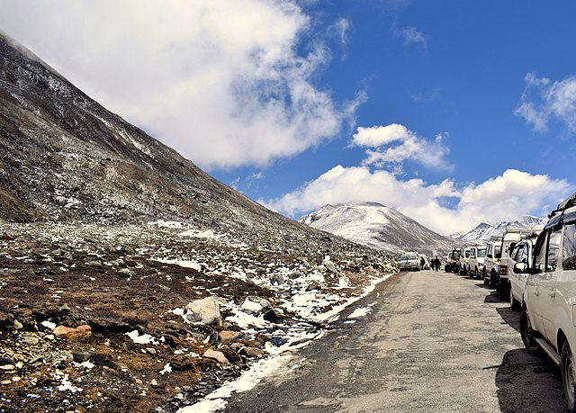

MOUNTAIN RANGES IN INDIA
1. Kangchenjunga
 s
s
Kangchenjunga is the third-highest mountain in the world.
Its summit lies at 8,586 m (28,169 ft) in a section of the Himalayas,
the Kangchenjunga Himal, which is bounded in the west by the Tamur River,
in the north by the Lhonak River and Jongsang La, and in the east by the Teesta River.
It lies in the border region between Nepal and Sikkim state of India, with three of
the five peaks, namely Main, Central and South, directly on the border,
and the peaks West and Kangbachen in Nepal's Taplejung District.
2. Triund_Hill

Triund is a small hill station in the Kangra district in the state of Himachal Pradesh, India.
Triund is a part of Dharamkot.Triund is at the foot of the Dhauladhar ranges and is at a height
of 2,828 metres Triund hills are also known as the crown jewel of Dharamshala. It is situated in
the midst of Dhauladhar mountains and gives a stunning view. Triund is one of the most popular
trekking spots in India which attracts a lot of tourists
3. Kailash

Mount Kailash is a mountain in the Ngari Prefecture, Tibet Autonomous Region of China. It has an
altitude of 6,638 m (21,778 ft).[1] It lies in the Kailash Range (Gangdisê Mountains) of the
Transhimalaya, in the western part of the Tibetan Plateau. Mount Kailash is less than 100 km towards
the north from the western trijunction of the borders of China, India, and Nepal.
4. Yuemsamdong

- Yumesamdong is a valley on the Lachung River about 15 km ahead of Yumthang.
- It is situated at 4724 m altitude in the North East of the State.
- The place is adjacent to Chinese border.
- the landscapes completely covered with snow offers a majestic view contrasting with the
patchy blue sky in between the fresh icy breeze.
5. Sandakphu

- Sandakphu is the highest peak in the state of West Bengal, India.
- It is the highest point of the Singalila Ridge in Darjeeling district on the West Bengal-Nepal border.
- The peak is located at the edge of the Singalila National Park.
- Four of the five highest peaks in the world, Everest, Kangchenjunga, Lhotse and Makalu can be seen from its summit.
.png) Click company logo or this to visit Website
Click company logo or this to visit Website